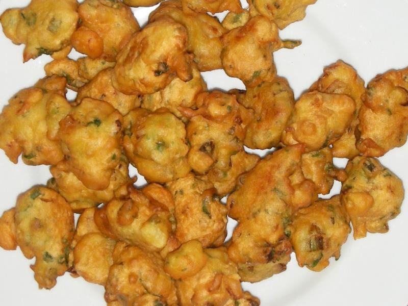

Bajia

Description
Bhajjias,Bhajjis or Baja is a popular street food which is easy to make by deepfrying.
a batter consisting of chickpea flour and flour combined with fresh herbs.
Bajias are enjoyed hot with chutney or hot sauce and a cup of tea. It can also be eaten as an appetizer.
Ingredients
- 200 grams besan
- 100 grams all purpose flour
- A pinch of food colouring
- A pinch of baking soda
- 1 medium onion finely chopped
- Half cup finely chopped coriander leaves
- Half cup finely chopped spring onions
- 1 teaspoon ginger paste
- 1 teaspoon garlic paste
- Salt to taste
- Water
- Oil for deep frying
Cooking Instructions
- Put all ingredients, except oil in a large bowl.
- Gradually mix with cold water to make a thick batter.
- Heat oil in frying pan.
- Drop spoonful of the mixture into the hot oil.
- Fry until golden bown.
- Drain on a paper towel
- Serve hot with chutney.